Food Without Farming No. 3
November/December 1970
by JAMES E. CHURCHILL
Though some may find it hard to believe, I know where there is a patch of May apples that covers a quarter-acre. Normally I see the plant growing in bunches only a few feet square and I was really amazed when I walked onto this patch while hunting Ginseng one day.
That year (1968) was the best I have ever seen for May apples and there were bushels of fruit in the quarter-acre "field". I visited the area again this late summer and-even though it was a very dry year here-I easily found enough May apples lying on the ground among the brown, wilted plants to fill a large cooking kettle.
I love these golden apples that are softly skinned and sweeter than they have any right to be. They taste like tropical mangoes to me and the first one I eat every year brings back memories of a year spent on the island of Trinidad with its beautiful beaches, exotic plants and friendly, fun loving people.
Some foods made from May apples are applesauce, drinking or jelly juice, marmalade and pie. The first step for marmalade-and many other recipes-is to make May apple puree. Wash the fruit very well and cut off the black tip and navel. Slice into small pieces and strain through a colander to separate the seeds and peels from the pulp. The pulp or puree, of course, is what you're after.
Make May apple marmalade by boiling four cups of puree and one box of commercial pectin together for one minute. Add two tablespoons lemon juice and five cups sugar. Bring to a high rolling boil. Pour into sterilized jars and cover with melted paraffin.
This puree also makes good applesauce if it is cooked over low heat for half an hour and sugar and cinnamon is then added to taste.
Juice for jelly and drinking can be obtained by simmering sliced and washed May apples for 45 minutes. Be sure to stir the apples as they simmer or they'll stick and burn. When the mixture is cooked, pour it into a jelly bag and let it drip into a pan for a few hours. If you don't have a jelly bag, you can easily make one by folding four thicknesses of cheesecloth into a foot-square and sewing it on three sides to form a bag.
The juice that drips from the bag should be clear and pulp-free. To make jelly, add one box of commercial pectin to four cups of juice and two tablespoons of lemon. Boil hard for one minute. Add five cups of sugar, boil again for two minutes and pour into sterilized jars. Seal with paraffin.
A good drink is made by combining half May apple and half grape juice. Sweeten to taste, chill and serve. May apples freeze very well and they, no doubt, could be canned if you want to keep some over winter.
While gathering May apples you might now and then notice a gleam of blue from vines that twine overhead around the branches of trees. Investigate these blue flashes. They will probably turn out to be wild grapes, a food so good that the Vikings named our entire continent Vinland after eating some.
I have seen only a few good grape years in our area. This happens to be one of them. Grape vines that I notice on my walks appear, from a distance, to. be solid blue in sections. Everyone in our family has picked grapes until we have one shelf of the fruit cellar covered with juice . . . both the drinking kind and the kind we will later make into jelly .
We make drinking juice by simmering crushed grapes about twenty minutes in water that is well below boiling. The fruit is then placed in a jelly bag and allowed to drip overnight. We freeze the juice for storage or return it to the stove, warm it to just below boiling, pour into sterilized quart jars and cap tightly with sterilized lids. Before drinking this juice, you'll want to sweeten it to taste and-probably-add water, as it will tend to be concentrated.
Jelly juice is made by boiling crushed grapes about ten minutes and letting them drip through the jelly bag for a few hours. Squeeze the juice out if you're in a hurry. To each 5 cups grape juice add one box of commercial pectin. If necessary, add water to make even cups of juice. Bring mixture to a high boil. Add 1 1/3 cups of sugar for each cup juice. Bring to a boil and boil hard for one minute. Pour immediately into sterilized jelly jars and seal with melted paraffin.
The best grape jam in the world is my mother's recipe: Cook one quart of wild grapes until the pulp comes off the seed. Push through a sieve, then, to separate the seeds from the pulp. Core two quarts of apples and grind them-peels and all-with a food grinder. Cook the ground apples until they're soft. Combine grape pulp and cooked apples. Add equal amounts of brown and white sugar a tablespoon at a time until the jam is sweet enough for your taste. Then add a tablespoon of cinnamon and simmer over low heat until thick. Can this or keep it frozen. If you decide to can, just place the jam in sterilized jars as it comes from the kettle.
Make grape pie by simmering one cup of grapes for 20 minutes and then pushing them through a sieve to remove the seeds. Blend together 1/2 cup sugar, 1/4 cup flour and a dash of salt. Pour in the pulp, add the juice of 1/2 lemon and one tablespoon melted butter. Mix very well and bake between two crusts at 400° until the crust is golden brown.
Chufa is known as a "dang weed" in my area. Every time water stands for any length of time in a corn field, a great stand of chufa or "nut grass" springs up. It is notoriously hard to discourage and commercial farmers douse it with all kinds of weed killer. On the contrary, I'm pleased when I see the plant growing-especially in low peaty soil-because I know it will soon send up a triangular flower stem with cross-like seed branches and, after the first frosts, it will be ready to dig. In fact, anytime after the seed cross appears on the chufa plant there will be tasty tubers waiting underneath.
Chufa tubers are like potatoes: The harder the ground, the smaller and more scattered the tubers on the plant. In our low, loose marsh soil, they grow to the size of marbles; in central Wisconsin's sand and marshes they get bigger; in hard clay they sometimes are scarcely as big as a pin head. Armed with this knowledge, you can readily understand my rule of thumb for harvesting chufas: If the ground isn't loose enough to allow the plant to be easily pulled, there probably won't be any tubers worth bothering with underneath.
I harvest chufa by grasping two or three plant tops and pulling them up. Still holding the tops in my hand, I beat the plants against the ground until the dirt is shaken loose from the roots. The tubers are then pinched loose and placed in the gathering pan. They make good nuts, flour or vegetable.
I make salted "nuts" by boiling one cup of tubers in salted water for about 30 minutes, changing the water once or twice during the boiling to eliminate all the soil that is contained in the wrinkled skin of the nodules. Next, I drain the tubers on a cloth for 15 minutes. Then they go into a fry pan containing bubbling hot vegetable oil or grease for a five-to-ten-minute toasting.
If you try this, after five minutes start removing, cooling and tasting a series of average-sized tubers. When they crunch nut-like between the teeth, they're ready. Remove from the pan, cool and eat.
To make flour from the nodules boil them for about 20 minutes, changing the water once or twice to get rid of the soil. When the boiling is complete, place the tubers on a cookie sheet and toast in the oven at 250° for about one hour or until they are crisp enough to shatter when pounded. Grind them, then, to the consistency of fine corn meal and use as corn meal.
One good chufa recipe is: To 1/2 cup chufa flour and 1/2 cup wheat flour add two teaspoons of baking powder, 1/2 teaspoon salt, one egg and one teaspoon sugar. Beat this together and add enough milk (or water) to make thick dough. Spoon into a greased pan and bake at 400° for about twenty minutes.
It's also pretty good to just combine 1/2 cup chufa flour with 1/2 cup wheat or acorn or cattail flour and add 1/8 teaspoon of salt and a teaspoon of baking powder. Mix in enough water to make a dough and fry in bubbling grease until a straw will pierce it and come out clean. This makes a good crust if you like crusty bread.
Chufa nuts can be used as a vegetable by boiling them for 20 minutes, changing the water twice to eliminate the soil. Place a cupful of the clean tubers in three cups of salted water and boil for about one hour. At the end of the hour replace the lost water, add two beef bullion cubes and simmer for another 20 minutes. As with most soups, you can add anything you have around to this one and it will probably make it even better. Season well and eat it while it's hot.
When chufa is ready to dig, another plant is also ripening in the marshes: Wild rice, a food so nourishing and satisfying that Indians fought bloody battles over the lakes in which it grew.
I once asked a man who lived in a northern Wisconsin county if any wild rice grew in his area. He replied, "I don't know, I wouldn't eat that stuff anyway." Not far from the spot where we were talking is a wayside marker for the burial grounds of 500 Indians killed in a battle over the wild rice gathering privileges for one particular lake. The battle was between the native Wisconsin Chippewa and a tribe of Sioux from farther west who tried to move in on the rice lake. That's pretty much the story of wild rice: If you've never eaten it, you may never know what you're missing . . . but if you do know wild rice, you will rate it as very valuable indeed.
Wild rice is ready to gather when most of the kernels are filled out and dark black. The traditional Indian method, utilizing two people and a narrow canoe, is still the best way to harvest the grain. One person sits or stands in the back and poles or paddles the canoe around while the other mans a pair of tapered hardwood sticks. One stick is used to bend the rice stalks in over the canoe's side and the other to strike the grain head, and shake them loose from the stalks. This method has the advantage of collecting only the mature grain and it's inefficient enough so plenty of seed is left to feed the wildlife and next year's plants.
After the rice is harvested and taken home you'll have to separate the husks from the kernels. This is done by first drying unhusked grain in the sum. It drys very fast. Then pour it slowly from one container to another out inthe breeze. This will blow away most of the broken bits of rice plant and leaves.
Now place the grain in an oven set at 250° and leave it for about 20 minutes. At the end of this time the husks should be very dry and the kernels hard. Put the rice in a close-mesh cloth bag, grasp the bag by the neck and slam it against a hard surface again and again. This is a surprisingly efficient thresher.
Another way to separate the grain from the husk is by rubbing the oven-parched rice between your hands. This is only good for small amounts, however.
I like to thresh rice best the way the Indians did it. Dig a shallow excavation in hard ground. This hole should be about as long as your feet and as wide as you normally stand. Line the hole with tough cloth (such as canvas), pour a thin layer of rice in . . . and walk on it. Walk in place for a few minutes and examine the rice. If it is properly parched it should be fairly threshed out in about five minutes. Pick up the cloth, then, with the rice inside and winnow it.
Winnowing is necessary as a final step no matter what threshing method you use. If a breeze is blowing, pour the rice slowly from one container to another exactly as we did at the beginning. The breeze will blow the husks and chaff away and leave fairly clean rice. Don't attempt to get out every speck of dirt. When you cook the rice you'll wash it first in one or two waters to float the impurities away. This you would do anyway, so you're adding no work.
There are so many ways of cooking wild rice that an entire book could be written on recipes for this grain. Some ways that I've developed, and especially like, are Wild Rice Breakfast Food, Wild Rice Lunch Soup and Wild Rice and Fish Supper.
Wild Rice Breakfast Food is made by stirring one cup of wild rice into three cups of lightly salted water and boiling for 45 minutes or until tender. Do not stir but watch the grain closely and add water if necessary to keep it from boiling dry. When the rice is tender, drain off any water and serve it with milk and sugar or just mix it with a teaspoon or two of honey as the Indians did. A good breakfast of wild rice will keep you going very well until time for Wild Rice Lunch Soup.
Make this rice soup by dropping a meaty soup bone into a kettle with enough salted water to cover it. This water should be measured and wild rice added to the equivalent of one cup of rice for each four cups of water. Add a chopped onion. Boil this mixture as long as you care to, but at least one hour. Add small amounts of water if necessary.
The rice will probably split open which makes it all the better, to my notion. As with most soup you can add any leftover vegetables you may have or want and it will be the better for the adding. Nothing at all wrong with just the beef and rice however.
All the "makings" for the Wild Rice 'and Fish Supper probably can be taken from the same lake. Boil some rice until tender (as for making the breakfast food) and set aside. For each cup of rice add one cup of boiled, flaked fillet of any fish. Trout, if you have it. Fillets are not necessary but you should strain or pick out any bones.
Don't over boil the fish. Stop boiling when you can flake a fillet with a fork. Stir the rice and fish together, add enough water to barely cover and simmer for one half hour. Season well. Serve hot or cold. This meal will stick to your ribs like nothing else in the world, regardless of its similarity to "Chinese food".
This is all very simple food forager fare. If you wish to get more exotic with wild rice any cookbook will provide the recipes.
I realize that, if you can't find your own or grow your own wild rice, it won't play a very big part in your "wild diet". Not at the prevailing price of $6.00 a pound, anyway. However, wild rice is rumored to grow all over the United States and Canada so there is probably some in your locality. If you have a fish pond, there is a pretty good chance you can grow your own. Seed is available from the University of Minnesota. At times I have seed too, as does the Wildlife Nurseries, Oshkosh. Wisconsin. Read A Fish Pond Of Your Own* for more information.
*A Fish Pond Of Your Own, another excellent article by James E. Churchill, will appear in MOTHER NO. 7
 The May apple in line detail. |
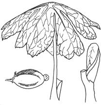 This is the way you'll find May apples in the field. |
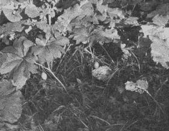 Pickin' wild grapes by the bucketful. |
|
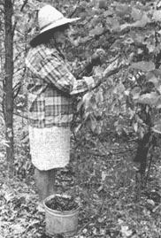 Wild grapes in line detail. |
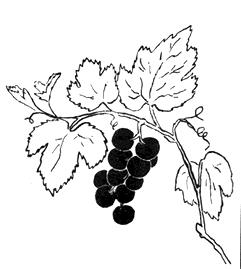 Chufa, fresh out of the mud. |
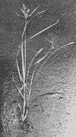 Chufa in line detail. |
|
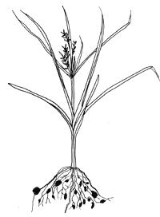 Wild rice ""in the swamp"". |
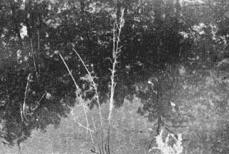 Line detail of wild rice. |
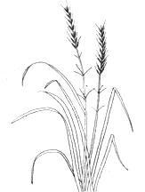 Indians use traditional method of harvesting wild rice on a Wisconsin lake. One canoe + two people = a rich bounty. |
|
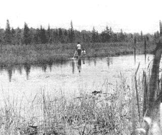 Rice.grains against a nickle for scale. |
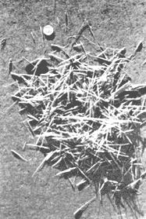 No canoe? Use a flat-bottomed boat! |
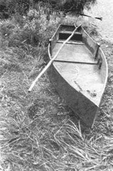 |